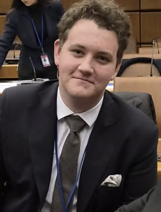
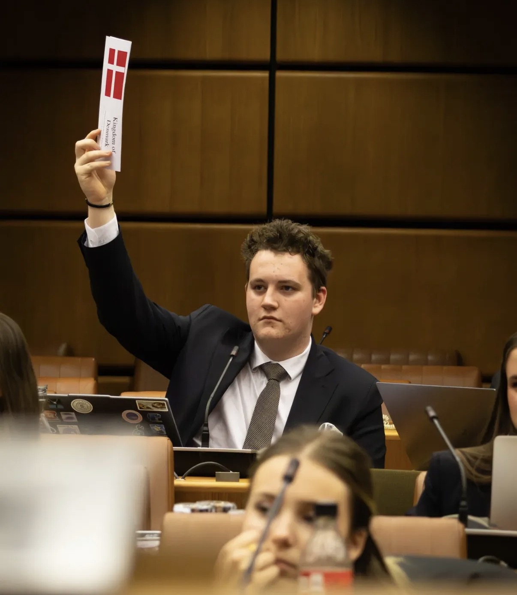

2024—2025
Student Council Representative
Represented student perspectives at the International School of Brno, helping make student voice part of the conversation.
Student representation

My name is Adam Busby, I am an IB Diploma student, student leader, and Model United Nations delegate committed to thoughtful dialogue, civic responsibility, and international cooperation.
IBDP
International education
MUN
Diplomatic dialogue
2027
IB cohort
Mission statement
“I believe the most durable progress is built when people listen seriously across different experiences, interests, and borders.”
My work in student representation and Model United Nations is guided by a simple conviction: informed, respectful exchange can turn difference into shared purpose. I aim to bring preparation, clarity, and a constructive spirit to every room.
Representative leadership rooted in listening.
Clear advocacy with room for consensus.
Diplomatic & leadership timeline
Select a lens to follow leadership, conference experience, or community engagement.
2024—2025
Represented student perspectives at the International School of Brno, helping make student voice part of the conversation.
2025—2026
Stepped into a leadership role on the Student Council, helping connect ideas, people, and student-led action.
2025
Represented Germany in the UN Security Council, debating rising tensions in the Democratic Republic of Congo and negotiating responses to pressing international crises.
2026 · Vienna
Represented Denmark in the UN Human Rights Council at Model United Nations of Vienna: three days of diplomacy, teamwork, and debate.
FLOMUN · ECOSOC
Represented Switzerland in ECOSOC, debating anti-corruption interventions, authoritarianism, and sustainable approaches to responsible AI governance.
Open Summit
Looking forward to constructive dialogue and informative workshops that include many skills that improve leadership and decision making in leadership roles.
Model United Nations portfolio
Conference experiences where research meets rhetoric—and national positions must find common language.
Delegate
A Security Council debate on rising tensions in the Democratic Republic of Congo, grounded in diplomacy, strategy, and negotiated resolution-making.

Delegation
A human-rights committee experience centred on principled dialogue, coalition-building, and navigating shared responsibility.
Honourable Mention Delegate
Defending Switzerland’s positions on anti-corruption, authoritarianism, sustainable development, and responsible AI governance.
Selected debate speeches
Professional network
For delegate exchanges, student initiatives, and conversations on international education and global affairs, connect through Adam’s professional network.
Connect on LinkedIn